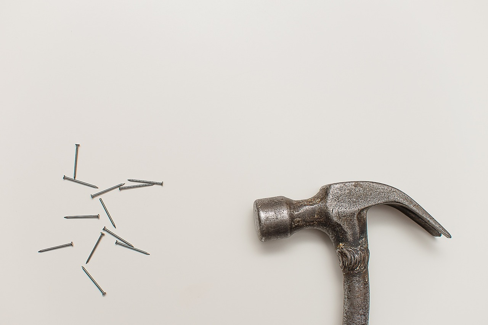
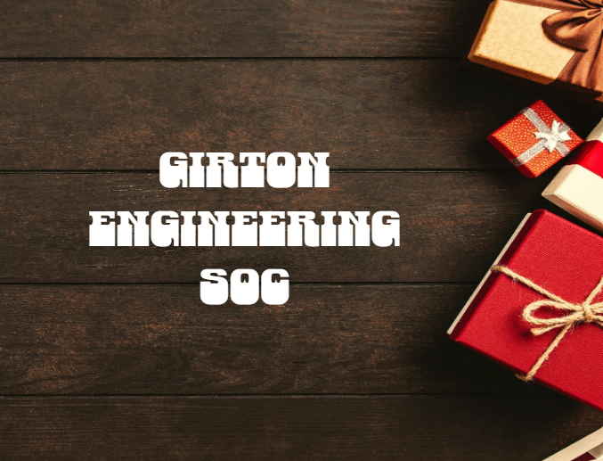
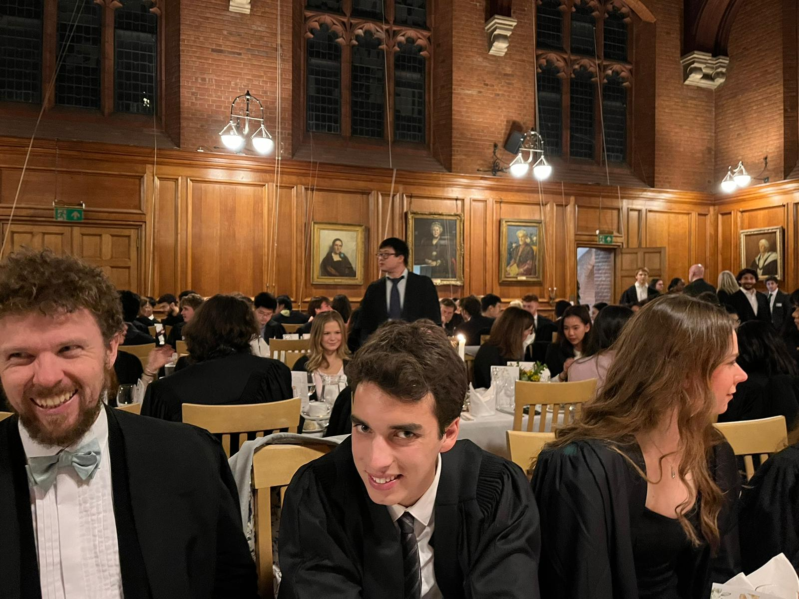
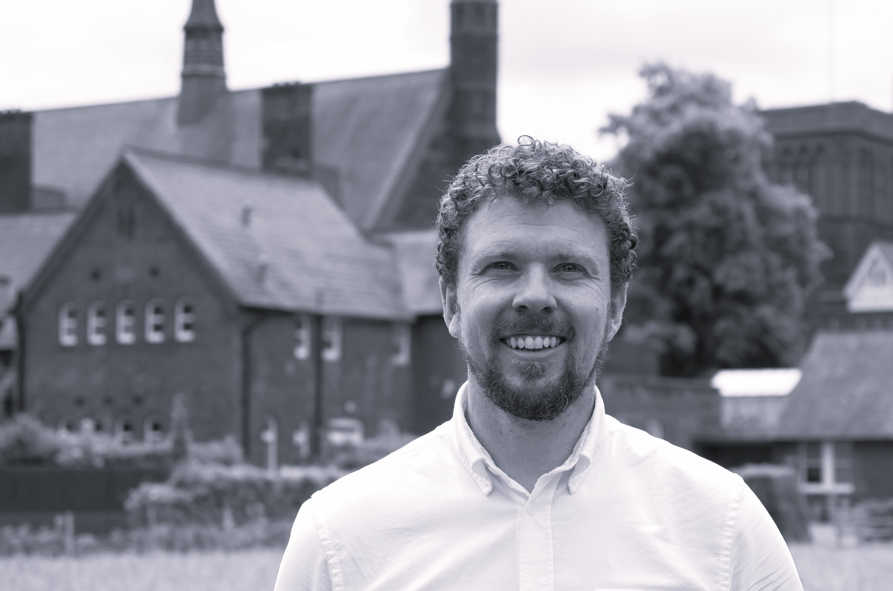

All Girton Engineers are part of Girton’s Engineering Society. The society aims to provide opportunities for socialisation amongst the cohort a>
We host several socials each term, usually accompanied by free food and drink, giving a great opportunity for students from different years, postgraduates, supervisors and Fellows to socialise in a re>
This year we have planned a Welcome Social for the Freshers, our trademark annual Christmas Quiz, Lent Term Presentation evening where Girton engineers get to show off their exciting projects and rese>
We're also continuing our “Girton Great Build” being planned for a Maker’s Space on site that would be perfect for engineering projects.
Girtonians have also been fully involved in the activities of the Cambridge University Engineering Society, CU Eco-racing, CU Space Flight, CU Riviera Racing as well as science and engineer>
The Girton Yearly Build
To start with, the most ambitious project in Girton engineering.
Last year, we saw a combination of timing, budget and college involvement (but don't tell them) result in an incomplete project, with the maker's space largely planned out, how>
This year, we've rallied together in Michaelmas, for the construction of the shed, in the final build. As a result, we now have in operation our very own project space, and wil>


The annual Christmas Quiz Night
Without a doubt, the grandest event in Girton Engineering,
and a personal favourite.
The battle of the cohorts, fellows and alumni is a great time to take a breather, nearing Christmas time
and put our wits to the test in groups, competing for the ultimate prize.
But more importantly, a time to relax at the end of a tough year with those who are, and have been a part of
engineering at Girton, and have a great time together.
Socials
Nice and simple,
once a term,
excluding the freshers welcome.
A great chance to meet the people that surround us more, and take some of the pressure off of socialising with
those doing engineering,
especially as it's a pain to socialise with anyone else.

Merch
As part of our mission to become the best society,
we must, of course, move in fashion.
Soon to drop will be the very best of retail and ultimately clothing,
so that you don't have to worry about looking in style again.
Our clothing lines are available to all, so whether you're looking to
come correct to one of our events, enjoy browsing clothing and styles,
or even just like to have something comfortable to pass the day in,
feel free to check it out.
Fellows
The fellows here at Girton are some of the best we know,
not that we know of any others.
On a more serious note,
I encourage you, Girtonians and non Girtonians alike,
to take a look at some of the amazing things that these great people work on.
Meet the fellows
Asides from of course forming the basis of our learning here at Girton.
